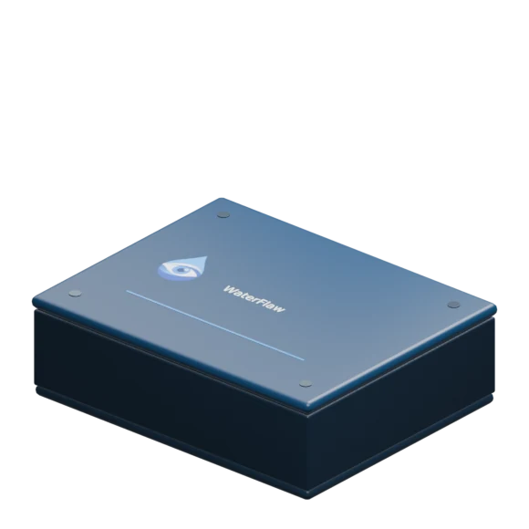

Dati per decidere
dove intervenire.
WaterFlaw usa misurazioni e analisi per aiutare chi gestisce una rete idrica a riconoscere possibili anomalie e programmare verifiche mirate.
Scopri il progettoRendere visibili
le perdite, prima
di intervenire.
WaterFlaw vuole rendere più semplice il controllo delle reti idriche. Le misure aiutano a scegliere dove verificare, evitando ispezioni indiscriminate.
L'acqua si perde.
Spesso senza sapere dove.
Nel 2022 le perdite idriche totali nelle reti comunali italiane erano il 42,4% dell'acqua immessa. Il dato descrive le reti pubbliche, non la domanda delle reti private.
* Dato provvisorio. Fonte: ISTAT, BesT Calabria 2024, tavola 2.8.
Dalle misurazioni
alle verifiche mirate.
I sensori misurano la portata e, quando serve, la pressione. Il software confronta le letture e segnala i tratti da controllare. La presenza di una perdita si accerta sul posto.
Il sensore,
da vicino.
Il prototipo raccoglie le letture dei misuratori. Qui puoi osservare l’involucro e la scheda che collega i sensori all’unità di controllo.
Caricamento del modello…

Vista esterna · 360°Il servizio, dall'installazione all'assistenza.
Il preventivo distingue la fornitura iniziale dal canone periodico. La configurazione dipende dall'estensione della rete e dai punti da monitorare.
e installazione
e assistenza
Ogni rete ha bisogno
di essere compresa.
WaterFlaw si rivolge inizialmente a organizzazioni che gestiscono reti idriche private e devono decidere dove concentrare i controlli.
- Aziende agricole
- Imprese industriali
- Strutture ricettive
- Complessi immobiliari
Una rete più leggibile.
Decisioni più precise.
La rete viene rappresentata, le misure vengono raccolte e le anomalie orientano le verifiche. Il gestore mantiene il controllo degli interventi.
- Rappresentare
- Misurare
- Segnalare
- Verificare
Prima un tratto.
Poi il resto della rete.
WaterFlaw può iniziare da una porzione delimitata. I dati raccolti aiutano il gestore a decidere se e dove estendere il monitoraggio.
Demo della piattaforma.
Una rete simulata mostra le misure nel tempo, i tratti da verificare e lo storico degli interventi.